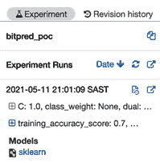

第十章:扩大你的机器学习工作流程
在这一章中，你将学习不同的技术和模式来在不同的可伸缩性维度上扩展你的机器学习 ( ML )工作流。我们将研究如何使用Databricks托管环境来扩展您的MLflow开发能力，为您拥有更大数据集的情况添加Apache Spark。我们将探索NVIDIA RAPIDS和图形处理单元 ( GPU )支持，以及Ray分布式框架来加速您的ML工作负载。本章的格式是一个小型的概念验证，带有一个定义好的规范数据集来演示一种技术和工具链。
具体来说，我们将了解本章的以下部分:
- 使用Databricks社区版环境开发模型
- 将MLflow与Apache Spark集成
- 将MLflow与NVIDIA RAPIDS (GPU)集成
- 将MLflow与Ray平台集成
本章将要求根据每个案例的标准官方文档，为每个引入的框架研究适当的设置。
技术要求
对于本章，您将需要以下先决条件:
- 最新版本的Docker安装在您的机器上。如果你还没有安装，请按照https://docs.docker.com/get-docker/的指示进行操作。
- 安装了最新版本的Docker Compose请按照https://docs.docker.com/compose/install/上的说明操作。
- 在命令行访问Git，按照https://Git-SCM . com/book/en/v2/Getting-Started-Installing-Git中的描述安装。
- 访问Bash终端(Linux或Windows)。
- 访问浏览器。
- Python 3.5以上版本已安装。
- 如第3章 、您的数据科学工作台中所述，在本地安装您的ML库的最新版本。
- 一个被配置为运行MLflow模型的Amazon Web Services(AWS)账户。
使用Databricks社区版环境开发模型
在许多小型团队和公司的场景中，启动一个集中的ML环境可能是一项昂贵的、资源密集型的前期投资。一个团队能够快速扩展，并让团队跟上速度，这对于在组织中释放ML的价值是至关重要的。在这些情况下，使用托管服务对于开始原型系统和开始理解以较低成本使用ML的可行性是非常相关的。
一个非常流行的托管ML和数据平台是Databricks平台，由开发MLflow的同一家公司开发。在本节中，我们将使用Databricks Community Edition版本和许可证，供学生和个人使用。
为了探索Databricks平台以开发和共享模型，您需要执行以下步骤:
- 在https://community.cloud.databricks.com/注册 Databricks社区版并创建一个帐户。
- 使用您刚刚创建的凭据登录您的帐户。
- Upload training data into Databricks. You can start by uploading the training data available in the
Chapter10/databricks_notebooks/training_data.csvfolder. In the following screenshot, you can see represented the Data tab on the left, and you should see your file uploaded to the platform:图10.1–将培训数据上传至数据块
- 将训练数据上传到数据块。您可以从上传
Chapter10/databricks_notebooks/input_prediction.csv文件夹中的训练数据开始。 - Create a cluster to use for your workloads. You are allowed to have clusters for your workloads with a limit of 15 gigabytes (GB) of random-access memory (RAM) and with usage for a defined period of time.
图10.2–在Databricks Community Edition中创建集群
- Create a new notebook in your Databricks platform on your landing workspace page by clicking on the Create a Blank Notebook button at the top right of the page, as illustrated in the following screenshot:
图10.3–在Databricks Community Edition中创建新笔记本
- We are now ready to start a notebook to execute a basic training job in this managed environment. You can start by clicking on Create Notebook, as illustrated in the following screenshot:

图10.4–创建新笔记本
- 将培训数据上传至数据块。您可以从上传
Chapter10/databricks_notebooks/input_prediction.csv文件夹中的培训数据开始。 - 导入所需的库。我们将采用一个
LogicRegression模型来对我们正在运行的btc-usd股票价格的业务案例进行分类，如下:import pandas import numpy as np import mlflow from sklearn.linear_model import LogisticRegression from sklearn.metrics import f1_score, confusion_matrix from sklearn.model_selection import train_test_split
- 为了读取数据，由于使用了平台中的Databricks文件系统，在Spark中读取数据并在此后将数据帧转换为
pandas更加方便。像往常一样，我们还将数据分为训练集和测试集。这里的是你需要的代码:df = (spark.read.option("header","true").csv("/FileStore/tables/training_data.csv")) pandas_df = df.toPandas() X=pandas_df.iloc[:,:-1] Y=pandas_df.iloc[:,-1] X_train, X_test, y_train, y_test = train_test_split(X, Y, test_size=0.33, random_state=4284, stratify=Y) - 我们的下一步将是快速训练我们的分类器，如下:
mlflow.sklearn.autolog() model = LogisticRegression() with mlflow.start_run(run_name='logistic_regression_model_baseline') as run: model.fit(X_train, y_train) preds = model.predict(X_test)
- In the top corner of the page, you can click on the Experiment button to view more details about your run, and you can click further to look at your model experiment, in the familiar interface of experiments, as illustrated in the following screenshot:
图10.5–实验按钮
- 一个有趣的功能可以扩展并加速您与其他人的协作能力，这就是发布模型笔记本的能力，与您共享链接的每个人都可以公开访问该模型笔记本，如下图所示:

图10.6–发布笔记本
您还可以将笔记本导出为一个dbc文件，这样您就可以在Databricks环境中快速启动它，并且您还可以在存储库中共享它，正如您在/databricks-notebooks/bitpred_poc.dbc下的章节文件夹中所看到的。
已经讨论了使用Databricks 环境扩展您运行、开发和分发模型的能力的方法，我们接下来将着眼于将Apache Spark流集成到我们的推理工作流中，以处理我们可以访问大型数据集的场景。
集成MLflow和Apache Spark
Apache Spark是一个非常可扩展和流行的大数据框架，允许大规模的数据处理。有关更多详情和文档，请前往https://spark.apache.org/。作为一个大数据工具，它可以用来加速你的部分ML推理，因为它可以在训练或推理级别设置。
在这种特殊情况下，我们将说明如何实现它，以使用上一节中在Databricks环境上开发的模型来将批处理推理作业扩展到更大的数据量。
为了探索Spark与MLflow的集成，我们将执行以下步骤:
- 用Python创建一个名为
inference_job_spark的新笔记本，链接到刚刚创建了bitpred_poc.ipynb笔记本的运行集群。 - 将您的数据上传到
dbfs环境中的文件/上传数据链接。 - 在笔记本的单元格中执行以下脚本，将
logged_model和df文件名更改为您环境中的文件名:import mlflow logged_model = 'runs:/6815b44128e14df2b356c9db23b7f936/model' df = spark.read.format("csv").load("dbfs:/FileStore/shared_uploads/ input.csv") # Load model as a Spark UDF. loaded_model = mlflow.pyfunc.spark_udf(spark, model_uri=logged_model) # Predict on a Spark DataFrame. df.withColumn('predictions', loaded_model()).collect()
这个在数据块或你自己的Spark集群上运行的说明性摘录可以扩展到大型数据集，在Spark中使用分布式计算的能力。
根据Apache Spark的扩展推理，我们现在将看看如何在MLflow的支持下使用GPU来扩展超参数优化作业。
将MLflow与NVIDIA RAPIDS (GPU)集成
训练和调整ML模型是一项耗时且计算量大的操作，也是能够从并行处理中获益最多的操作之一。我们将在这一部分探讨如何将您的MLflow培训工作(包括超参数优化)与NVIDIA RAPIDS框架相集成。
要集成NVIDIA RAPIDS库，请执行以下步骤:
- Install RAPIDS in the most convenient way for your environment, outlined as follows:
a.https://rapids.ai/start.html包含部署选项的详细信息。
b.https://developer . NVIDIA . com/blog/run-RAPIDS-on-Google-Colab/详细介绍了如何在Google co laboratory(Google Colab)上运行 RAPIDS。
- 在您的环境中安装MLflow。
- 导入需要的库，如下:
import argparse from functools import partial import mlflow import mlflow.sklearn from cuml.metrics.accuracy import accuracy_score from cuml.preprocessing.model_selection import train_test_split from cuml.ensemble import RandomForestClassifier from hyperopt import fmin, tpe, hp, Trials, STATUS_OK
- 实现
load_data函数，这是一个帮助函数，用于加载cudf要使用的数据。DataFrame是一个数据帧库，用于在不知道计算统一设备架构 ( CUDA 编程细节的情况下进行加载、连接、聚合和过滤。这是你需要的代码:def load_data(fpath): import cudf df = cudf.read_parquet(fpath) X = df.drop(["ArrDelayBinary"], axis=1) y = df["ArrDelayBinary"].astype("int32") return train_test_split(X, y, test_size=0.2)Start the ray server ray.init() client = serve.start() - 定义一个训练循环，如下:
def _train(params, fpath): max_depth, max_features, n_estimators = params max_depth, max_features, n_estimators = (int(max_ depth), float(max_features), int(n_estimators)) X_train, X_test, y_train, y_test = load_data(fpath) mod = RandomForestClassifier( max_depth=max_depth, max_features=max_features, n_estimators=n_estimators ) mod.fit(X_train, y_train) preds = mod.predict(X_test) acc = accuracy_score(y_test, preds) mlparams = { "max_depth": str(max_depth), "max_features": str(max_features), "n_estimators": str(n_estimators), } mlflow.log_params(mlparams) mlflow.log_metric("accuracy", acc) mlflow.sklearn.log_model(mod, "saved_models") return {"loss": acc, "status": STATUS_OK} - 调用的内训练循环，像这样:
def train(params, fpath, hyperopt=False): with mlflow.start_run(nested=True): return _train(params, fpath, hyperopt)
- 如果您使用的是Docker中部署的版本，那么通过读取一个参数来设置您的主流程。完成这项工作的代码如下面的代码片段所示:
if __name__ == "__main__": parser = argparse.ArgumentParser() parser.add_argument("--algo", default="tpe", choices=["tpe"], type=str) parser.add_argument("--conda-env", required=True, type=str) parser.add_argument("--fpath", required=True, type=str) args = parser.parse_args() - 定义要优化的试验和参数，如下:
search_space = [ hp.uniform("max_depth", 5, 20), hp.uniform("max_features", 0.1, 1.0), hp.uniform("n_estimators", 150, 1000), ] trials = Trials() algorithm = tpe.suggest if args.algo == "tpe" else None fn = partial(train, fpath=args.fpath, hyperopt=True) experid = 0 - 运行你的主循环，如下:
artifact_path = "Airline-Demo" artifact_uri = None with mlflow.start_run(run_name="RAPIDS-Hyperopt"): argmin = fmin(fn=fn, space=search_space, algo=algorithm, max_evals=2, trials=trials) print("===========") fn = partial(train, fpath=args.fpath, hyperopt=False) final_model = fn(tuple(argmin.values())) mlflow.sklearn.log_model( final_model, artifact_path=artifact_path, registered_model_name="rapids_mlflow_cli", conda_env="envs/conda.yaml", )
在处理了使用高度可扩展的计算环境来为基于Ray 平台的模型提供服务之后，我们现在将考虑一个不同的问题，在这里我们将查看在一个集中的云位置跟踪来自本地机器的多次运行的选项。
将MLflow与Ray平台集成
Ray 框架(https://docs.ray.io/en/master/)是一个分布式平台，允许你快速扩展部署基础设施。
使用Ray，您可以在运行需要以与模型服务相同的方式扩展的ML平台时添加任意逻辑。它基本上是一个web框架。
我们将使用的模型和内容预加载到存储库的以下文件夹中:https://github . com/packt publishing/Machine-Learning-Engineering-with-ml flow/tree/master/chapter 10/ml flow-ray-serve-integration。
为了将您的模型服务执行到Ray中，请执行以下步骤:
- 通过运行以下命令安装Ray包:
pip install -U ray
- 在您的环境中安装MLflow。
- 导入需要的库，如下:
import ray from ray import serve import mlflow.pyfunc
- 实现模型后端，这基本上意味着将模型服务功能包装到你的Ray服务环境中。以下是您需要的代码:
class MLflowBackend: def __init__(self, model_uri): self.model = mlflow.pyfunc.load_model(model_ uri=model_uri) async def __call__(self, request): return self.model.predict(request.data)
- 启动射线服务器，如下:
ray.init() client = serve.start()
- 加载模型并创建一个后端，就像这样:
model_uri = "./tmp/0/31fc9974587243d181fdbebfd4d2b6ad/artifacts/model" client.create_backend("mlflow_backend", MLflowBackend, model_uri) - 通过运行以下命令测试服务平台:
ray start --head # Start local Ray cluster. serve start # Start Serve on the local Ray cluster.
在处理了使用高度可扩展的计算环境在Ray平台上服务模型之后，我们将在下一章中查看性能和监控 g组件。
总结
在这一章中，我们关注于使用Databricks环境来扩展您运行、开发和分发模型的能力。我们还考虑将Apache Spark流集成到我们的批处理推理工作流中，以处理我们可以访问大型数据集的场景。
我们总结了两种扩展超参数优化和应用编程接口 ( API )的方法，使用NVIDIA RAPIDS框架和Ray分布式框架提供可扩展性。
在下一章和本书的后续章节中，我们将关注ML模型的可观察性和性能监控。
延伸阅读
为了加深您的知识，您可以参考以下链接中的文档: